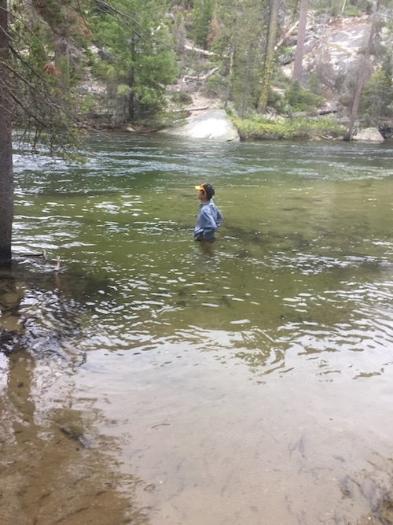
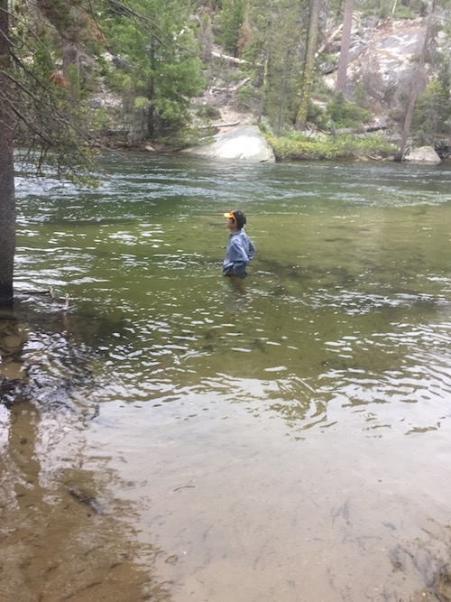

Computer Security Research
Memory Forensics Plugins for ML Models
As part of my work at the CyFI lab, I develop plugins to recover ML model attributes from memory.
A large part of the process involves using GDB and examining native Tensorflow and Python structs to create
VTypes representing the C structures of the weights, shapes, and biases interpreted from Python. The plugin
traverses the garbage collection generations in Python's memory heap (essentially a doubly linked list with pointers to garbage-collected objects)
to search for relevant instances of models using the Volatility Framework. With the model,
we can recover key data structures like layers, shapes, hyper-parameters, weights, and biases and rehost the model in a live process. We subsequently use backdoor detection
algorithms for white-box deep learning models to determine if a given model was compromised (through node injection, data poisoning, etc.).
Secret Sharing for Attorney-Client Data in a Multi-Provider Cloud Architecture
In this project, I designed a multi-provider cloud architecture based on the criteria of ensuring confidentiality, availability, and integrity of attorney documents. I emphasized providing efficiency and usability to encourage future testing of my architecture in law firms.
My experimental results indicate the low computational overhead of adding the secret-sharing approach to a multi-cloud environment, even on consumer grade hardware. This will be essential for integrating law firms as active participants into our architecture. The only possible way of compromising this system is if multiple cloud providers collude, which is still unlikely given that the shares are additionally encrypted.
A Privacy-Preserving Contact Tracing Application
A few other engineering and medicine oriented students and I spent a few months working on an app that could track the rapid spread of COVID-19. While many governments, such as China and South Korea, have implemented functional contact tracing apps, they are notorious for their lack of privacy. Traditional solutions like decentralization or using Bluetooth are simply too complex or inadequate. Our solution mainly revolves around
the user sending the hash of coordinates and a semi-trusted database that will do the matching and identifying of at-risk users. Infected users can report their diagnoses, which are verified and updated on the database and heat map. Read the manuscript below for the details.
Client Source Code
Server Source Code
About Me

Hi, I am a high schooler from San Jose, California! I created my website mainly to document my backpacking trips. As an ultralight backpacker, I spend a lot of time researching gear options and cool trails around me. If you take a look at my gear list (linked above), you will see that I try my best to streamline my pack weight and increase my comfort while hiking. For instance,
I do not bring a stove, but cold soak, using cold water to rehydrate oats, couscous, and other calorie dense foods. I also ditched my tent for a flat tarp, so I could save a couple pounds and use my trekking poles for multiple purposes. So far, I have section-hiked part of the JMT (with my friends Alden and Jeremy in the pictures) and most of the more minor backpacking trails around in the Bay Area.
As an Eagle Scout, I take full advantage of our many outings to test out new gear, like my new Borah Gear tarp! I hope to thru-hike the PCT after graduation. I also started to record some of my CS projects on my website to document what I am working on. After an internship at the Department of Defense, I became interested in network security and the detection of APT attacks. From there, I branched off to applied cryptography and human-centered security (see my secret sharing and contact tracing projects).
Recently, I am exploring memory forensics and malware analysis as I am working on detecting backdoor attacks on DNNs at the CyFI Lab. Check out my work on GitHub!


 
